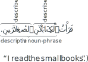
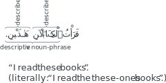
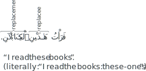
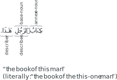
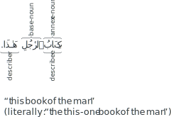

Not ready for study.
16 Pointing nouns
16.1 Introduction
Consider the following expression:
The word “this” is what we will call a pointing noun. We call it this because we can imagine standing next to a book and pointing to it and saying “this book”.
The word “book” here is similarly called the pointed-to noun. It refers to the object being pointed to.
16.2 The pointing nouns in Arabic
There are two types of pointing nouns:
- Near pointing nouns: “this-one” (singular) and “these-ones” (dual and plural).
- Far pointing nouns: “that-one” (singular) and “those-ones” (dual and plural).
The following are the pointing nouns in Arabic:
| Participant | State | Near pointing noun | Far pointing noun | ||
|---|---|---|---|---|---|
| sing. masc. | all | هَـٰذَا | this onem | ذَ ٰلِكَ | that onem |
| sing. fem. | all | هَـٰذِهِ | this onef | تِلْكَ | that onef |
| dual masc. | u | هَـٰذَانِ | these ones2,m | ذَ ٰنِكَ | those ones2,m |
| dual masc. | a,i | هَـٰذَيْنِ | these ones2,m | ذَيْنِكَ | those ones2,m |
| dual fem. | u | هَاتَانِ | these ones2,f | تَانِكَ | those ones2,f |
| dual fem. | a,i | هَاتَيْنِ | these ones2,f | تَيْنِكَ | those ones2,f |
| plural | all | هَـٰؤُلَاءِ | these ones3 | أُولَـٰئِكَ | those ones3 |
Note the following:
Many of the pointing nouns contain small alif ◌ٰ. For most of them, this is how they must be written. It would be incorrect to write هَـٰذَا hād͡hā as هَاذَا.
All the near pointing nouns begin with a ه. And all the far pointing nouns end with ك.
The و in أُولَـٰئِكَ ʾulāʾika is silent and not pronounced. That is, the first syllable has a short vowel u, not the long vowel ū.
Most of the pointing nouns are rigid nouns. That is: their endings are not modified for their state.
The dual pointing nouns, however, are flexible nouns, for example: هَـٰذَانِ (u-state) / هَـٰذَيْنِ hād͡hayni (a- and i-states).
The pointing nouns for the plural are the same for both masculine and feminine genders.
16.3 Definiteness of pointing nouns
The pointing nouns share some similarities with pronouns هُوَ, هِيَ, etc. Just like pronouns, pointing nouns, too, are definite nouns even though they don’t have ٱَلْ.
Remember, however, from section @ref(describers-with-annexations-to-pronouns), that pronouns may not be describees. Pointing nouns are different from pronouns in this regard. It is allowed to describe a pointing noun with a describer in a noun phrase.
Both these facts will prove useful in the next section.
16.4 Pointing noun for plurals of non-intelligent beings
Consistent with how we have been dealing with the so far, , we can choose between the following pointing nouns for the plurals of non-intelligent beings:
| Near pointing noun | Far pointing noun | ||||
|---|---|---|---|---|---|
| sing. fem. | all | هَـٰذِهِ | this onef | تِلْكَ | that onef |
| plural | all | هَـٰؤُلَاءِ | these ones3 | أُولَـٰئِكَ | those ones3 |
The singular feminine pointing noun is usually preferred, unless the plural plural pointing noun is needed to indicate that there is more than one. We will be giving examples throughout this chapter.
16.5 The pointing noun phrase
Remember from chapter @ref(adjectival-nouns-and-descriptive-noun-phrases) that a descriptive noun-phrase consists of a describer and a describee. The describer follows the describer and matches it in definiteness, state, gender, and number.
Here is an example of a descriptive noun-phrase in a sentence.
We will now see how this same descriptive noun-phrase can be used with pointing nouns.
16.5.1 Pointing to a single noun
We will first deal with nouns that are single words, like ٱَلْكِتَابَيْنِ above. In section @ref(pointing-to-an-annexation) below, we will deal with nouns that are part of an annexation, like كِتَابَيِ ٱلرَّجُلِ.
16.5.1.1 The pointed-to noun is definite with ٱَلْ
Just like an adjectival noun, a pointing noun can be a describer in a noun-phrase. But remember from section @ref(definiteness-of-pointing-nouns) above that pointing nouns are definite. So, if a pointing noun is a describer in a noun-phrase, the describee has to be definite too. Example:
In the above example, the pointed-to noun ٱَلْكِتَابَيْنِ is the describee in a descriptive noun-phrase. It is definite, in the a-state, masculine, and dual.
The pointing noun هَـٰذَيْنِ is its describer. It follows the describee and matches it being dual, in the a-state, masculine, and dual.
As a special case, when the pointed-to noun has ٱَلْ (as in this case: ٱَلْكِتَابَيْنِ), then the order of the pointing noun and the pointed to noun is permitted to be reversed.
The pointing noun is then a replacee (see section @ref(the-replacement)), and the pointed-to noun is its replacement.
Example:
In the above example, the pointing noun هَـٰذَيْنِ is a replacee. It is definite, in the a-state, masculine, and dual.
The pointed-to noun ٱَلْكِتَابَيْنِ is its replacement. It follows the replacee and matches it being dual, in the a-state, masculine, and dual.
As a matter of fact, even though both orders are permitted, this reverse order of placing the pointing noun first and following it with the pointed-to noun is more common.
Here are some more examples of pointing noun phrases when the pointed-to noun is definite with ٱَلْ:
هَـٰذَا ٱَلرَّجُلُ ٱلْكَرِيمُ إِمَامٌ.
ٱَلرَّجُلُ ٱلْكَرِيمُ هَـٰذَا إِمَامٌ.
“This noble man is an imām.”
16.5.1.2 The pointed-to noun is a proper noun
Remember that proper noun are definite nouns, even though they usually don’t begin with ٱَلْ. For example:
| زَيْد | Zayd | ٱَلْحَارِث | al-Ḥārit͡h |
| 2زَيْنَب | Zaynab | قُرَيْش | Qurays͡h |
Such names may also be part of a pointing noun phrase. If they don’t begin with ٱَلْ then only the [pointed-to noun first, then pointing noun] order is permitted. Example:
زَيْدٌ هَـٰذَا أَخُو زَيْنَبَ تِلْكَ.
“This Zayd is that Zaynab’s brother.”
قُرَيْشٌ هَـٰؤُلَاءِ سَكَنُوا بِمَكَّةَ.
“These Qurays͡h dwelled in Makkah.”
If the name begins with ٱَلْ then both orders are permitted.
هَـٰذَا ٱلْحَارِث
ٱلْحَارِث هَـٰذَا
“this al-Ḥārit͡h”
16.5.2 Pointing to an annexation
Consider the following expression:
“the man’s book”
We can apply the pointing noun “this” to either “the book” or to “the man” in a pointing noun phrase. So we have two options:
- “the book of this man”
- “this book of the man”
Similarly, consider the following expression:
“Zayd’s book”
We can, again, apply the pointing noun “this” to either “the book” or to “Zayd”:
- “the book of this Zayd”
- “this book of Zayd”
In this section we will learn how to construct these pointing noun phrases in Arabic. Arabic uses annexations to express the above meanings. So we will discuss annexations like:
كِتَابُ ٱلرَّجُلِ
“the book of the man”
and
كِتَابُ زَيْدٍ
“the book of Zayd”
Note that both the above annexations are definite because their base nouns are definite.
Indefinite annexations like كِتَاب رَجُلٍ “a man’s book” cannot be used in pointing noun phrases.
16.5.2.1 The definite base noun begins with ٱَلْ
We will first consider annexations where the definite base noun begins with ٱَلْ, like:
كِتَابُ ٱلرَّجُلِ
“the book of the man”
16.5.2.1.1 Pointing to the base noun
We would like to express the phrase:
“the book of this man”
In order to point to the base noun ٱَلرَّجُل “the man” with the pointing noun هَـٰذَا “this-onem”, we can put the pointing noun either before or after the base noun, thus:
كِتَابُ هَـٰذَا ٱلرَّجُلِ
كِتَابُ ٱلرَّجُلِ هَـٰذَا
“the book of this man”
Both these pointing noun phrases give the same meaning: “the book of this man”. However, the first phrase كِتَابُ هَـٰذَا ٱلرَّجُلِ is preferred, consistent with what we learned in section @ref(phrase-single-pointed-to-noun-with-al), above.
The second phrase كِتَابُ ٱلرَّجُلِ هَـٰذَا, although correct, would only rarely be used with this meaning. (In fact, it has another meaning: “this book of the man” which we will learn in section @ref(pointing-to-the-annexe-noun), below.)
Here is how these phrases could be used in complete sentences:
كِتَابُ هَـٰذَا ٱلرَّجُلِ جَدِيدٌ.
كِتَابُ ٱلرَّجُلِ هَـٰذَا جَدِيدٌ.
“The book of this man is new.”
Before we give more examples, let’s analyze these phrases in detail.
Consider the first pointing noun phrase:
As you can see the pointing noun هَـٰذَا has taken the place of ٱَلرَّجُل as the base noun in the annexation. In addition to being the base noun, هَـٰذَا is also a replacee, whose replacement is ٱَلرَّجُل. The literal, word-for-word, translation of this phrase is:
“the book of this-one: the man”
The more natural translation is:
“the book of this man”
Consider, now, the second pointing noun phrase:
ٱَلرَّجُل, here, keeps its place as the base noun in the annexation. In addition to being the base noun, ٱَلرَّجُل is also a describee, whose describer is the pointing noun هَـٰذَا. The literal, word-for-word, translation of this phrase is:
“the book of the this-one man”
The more natural translation is:
“the book of this man”
16.5.2.1.2 Pointing to the annexe noun
Consider, again, the annexation:
كِتَابُ ٱلرَّجُلِ
“the book of the man”
We have already discussed how to point to the base noun ٱَلرَّجُل in a pointing noun phrase. Now, we would like to point to the annexe noun كِتَاب in a pointing noun phrase.
In other words, we would like to express the meaning:
“this book of the man”
The way to express this in Arabic is
كِتَابُ ٱلرَّجُلِ هَـٰذَا
“this book of the man”
But wait! Didn’t we see in section @ref(pointing-to-the-base-noun) above that this expression has the meaning “the book of this man”?
It turns out that this expression supports both meanings.
But it will generally only be used for the meaning: “this book of the man”
In order to express “the book of this man” we will typically use the expression كِتَابُ هَـٰذَا ٱلرَّجُلِ.
Let’s analyze the expression كِتَابُ ٱلرَّجُلِ هَـٰذَا “this book of the man” in detail:
كِتَاب, here, is both and annexe noun and a describee. Its describer is the pointing noun هَـٰذَا. The literal, word-for-word, translation of this phrase is:
“the this-one book of the man”
The more natural translation is:
“this book of the man”
Here is this pointing noun phrase in a complete sentence:
كِتَابُ ٱلرَّجُلِ هَـٰذَا أَخْضَر.
“This book of the man is green.”
Ambiguity of this phrase
A quick note about the ambiguity of this expression:
كِتَابُ ٱلرَّجُلِ هَـٰذَا
“this book of the man” (usual)
“the book of this man” (rare)
The ambiguity of whether the pointing noun هَـٰذَا points to the annexe noun كِتَابُ or the base noun ٱلرَّجُلِ only exists because the annexe noun and the base noun match each other in gender and number: singular masculine. If the annexe noun and the base noun were different in gender and number, then there would be no ambiguity. Examples:
كِتَابَا ٱلرَّجُلِ هَـٰذَانِ
“these books2 of the man”
كِتَابُ ٱلرَّجُلَيْنِ هَـٰذَا
“this book of the men2”
كِتَابُ ٱلْمَرْأَةِ هَـٰذَا
“this book of the woman”
كِتَابُ ٱلْمَرْأَةِ هَـٰذِهِ
“the book of this woman”
Here are some more examples of pointing to annexe nouns:
16.5.2.1.3 The base noun is a proper noun beginning with ٱَلْ
Consider the annexation:
كِتَابُ ٱلزُّبَيْرِ
“the book of al-Zubayr”
We can apply the preceding discussion of pointing to the annexe noun and base noun to this annexation as well. So we get:
كِتَابُ هَـٰذَا ٱلزُّبَيْرِ
“the book of this al-Zubayr”
كِتَابُ ٱلزُّبَيْرِ هَـٰذَا
“this book of al-Zubayr” (usual)
“the book of this al-Zubayr” (rare)
16.5.2.2 The definite base noun does not begin with ٱَلْ
Consider, now, that the base noun is definite but does not begin with ٱَلْ. There are two such types of nouns that we will discuss:
- Proper nouns not beginning with ٱَلْ
- Pronouns
16.5.2.2.1 The base noun is a proper noun not beginning with ٱَلْ
We will first deal with proper nouns that don’t begin with ٱَلْ. Consider the annexation:
كِتَابُ زَيْدٍ
“the book of Zayd”
Because the base noun زَيْد does not begin with ٱَلْ, any pointing nouns can come only after the entire annexation, thus:
كِتَابُ زَيْدٍ هَـٰذَا
In theory, this supports two meanings:
- “this book of Zayd”
- “the book of this Zayd”
In practice, however, the first meaning (“this book of Zayd”) is much more likely. Pointing to a proper noun in a pointing noun phrase (“the book of this Zayd”) is uncommon, generally.
16.5.2.2.2 The base noun is a pronoun
We have learned, in section @ref(definiteness-of-pronouns), that pronouns are always definite, despite not beginning with ٱَلْ.
We have also learned, in section @ref(pronouns-as-base-nouns), that a pronoun may be a base noun in an annexation. Example:
كِتَابُهُ
“his book”
Neither the annexe noun كِتَاب, nor the attached pronoun هُ begin with ٱَلْ. So if we want to add the pointing noun هَـٰذَا to this annexation to form a pointing noun phrase, then we have to place it at the end, after the annexation, thus:
كِتَابُهُ هَـٰذَا
The pointing noun هَـٰذَا, here, is a describee. But what is its describer?
We have also learned, in section @ref(describers-with-annexations-to-pronouns) that pronouns may not be describees in a descriptive noun phrase.
So, we are left with only one option: the annexe noun كِتَاب is the desceibee. And the meaning of the phrase is:
كِتَابُهُ هَـٰذَا
“this book of his”
Here are some more examples:
16.6 Pointing nouns as subjects
Besides their use in pointing noun phrases, pointing nouns are very often used as the subject of a sentence. For example:

The pointing noun is (usually) made to match the information in number and gender. Examples:
هَاتَانِ جَارِيَتَانِ.
“These are girls2.”
أُولَـٰئِكَ مُعَلِّمُونَ.
“Those are teachers.”
هَـٰؤُلَاءِ أَقْلَامٌ.
“These are pens.”
تِلْكَ بُيُوتٌ.
“Those are houses.”
هَـٰذَانِ صَغِيرَانِ.
“These are small ones2.”
The information may be a single word (as above) or more complex (as below):
ذَ ٰلِكَ أَمِيرُ ٱلْمُؤِْمِنِينَ.
“That is the commander of the believers.”
أُولَـٰئِكَ أَكَلْنَ ٱلطَّعَامَ..
“Those-ones ate3,f the food.”
هَـٰذَا ثَوْبُ رَجُلٍ.
“This is a man’s garment.”
هَـٰذِهِ كُتُبُهُ.
“These are his books.”
هَـٰذَانِ بَيْتَانِ كَبِيرَانِ..
“These are big houses2.”
If the information is a noun that begins with ٱَلْ then it may be placed after the pointing noun subject in the same manner:

While the this is permitted and correct, it may be sometimes confused with for the pointing noun phrase “this man”. So, in the same way that we learned in section @ref(chap-smp-sent-sec-def-info), we insert a detached pronoun between the subject and the information, thus:
هَـٰذَا هُوَ ٱلرَّجُلُ.
“This is the man.”
Here are some more examples:
هَاتَانِ هُمَا ٱلْجَارِيَتَانِ.
“These are the girls2.”
أُولَـٰئِكَ هُمُ ٱلْمُعَلِّمُونَ.
“Those are the teachers.”
هَـٰؤُلَاءِ هُنَّ ٱلْأَقْلَامٌ.
“These are the pens.”
تِلْكَ هِيَ ٱلْبُيُوتٌ.
“Those are the houses.”
هَـٰذَانِ هُمَ ٱلصَّغِيرَانِ.
“These are the small ones2.”
16.6.1 Mismatched pointing noun subject
When the pointing noun is a subject we usually match its number and gender with the number and gender of the information, as we have been doing so far. However, when the pointing noun subject refers to a noun in a previous sentence, then we may prefer to match to the previous noun than to the the following information. Example:
بَلَغَنَا خَبَرُ ٱلْمَطَرِ عَلَى ٱلْجَبَالِ. ذَ ٰلِكَ بُشْرَىٰ لِلزُّرَّاعِ.
“The news of the rain on the mountains has reached us. That is a good tiding for the sowers.”
Note that the second sentence’s subject and information mismatch:
ذَ ٰلِكَ بُشْرَىٰ
“That is a good tiding.”
The information بُشٌرَىٰ “a good tiding” is a feminine noun but the subject ذَ ٰلِكَ is masculine. This is because ذَ ٰلِكَ is actually referring to خَبَر in the previous sentence which is a masculine noun.
16.7 Pointing nouns as other parts of speech
Besides their use in pointing noun phrases and as subjects, pointing nouns may be used as other parts of speech as well, typically where one would expect pronouns. Here are some examples:
أَخَذْتُ ٱلْكِتَابَيْنِ مِنَ ٱلْمَكْتَبَةِ. قَرَأْتُ هَـٰذا وَمَا قَرَأْتُ ذَ ٰلِكَ.
“I took the books2 from the library. I read this one and I didn’t read that one.”
شَغَلَنِي ٱلْعَمَلُ ٱلصَّعْبُ وَمَا فَرَغْتُ مِنْ ذَ ٰلِكَ.
“The difficult work occupied me and I did not get done with that.”